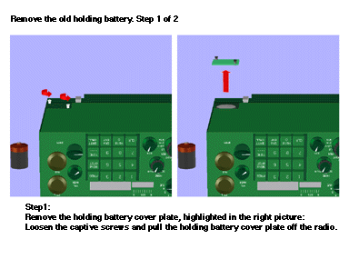

Research in 3D User Interface Design at Columbia University
Abstract
The Computer Graphics and User Interfaces Laboratory at Columbia
University is pursuing research in the design and development of new
user interface metaphors. This overview provides a
high-level description of our work and surveys projects that
reflect our two key research directions: 3D user interfaces (including
virtual environments and augmented reality) and knowledge-based user
interfaces.
Keywords
Augmented reality, virtual reality, virtual environments,
knowledge-based graphics, intelligent user interfaces, head-mounted displays
Introduction
The Columbia University Computer Graphics and User Interfaces Laboratory
has as its goal the exploratory design and development of high-quality
user interfaces. Our research emphasizes
virtual environments, created through the use of
3D interaction and display devices (including augmented reality,
in which
see-through displays overlay graphics on the real world), and the
application of artificial intelligence techniques to design effective
information graphics.
Much of our work combines both these themes.
The laboratory was formed within the Department of Computer Science in 1985 and
currently includes five Ph.D. students, eight M.S. students, and three
undergraduates. Our laboratory facilities include 3D graphics workstations,
see-through head-worn displays, 3D trackers and interaction devices,
and spatial sound processing equipment.
Collaborations
We have active collaborations with a number of groups within the department,
the engineering school, and the university, which reflect the diversity of our
interests.
Since 1988, we have been collaborating with the Natural
Language Processing Laboratory, directed by Prof. Kathy McKeown.
Complementing our work on knowledge-based generation of graphics,
together we have been developing knowledge-based multimedia user interfaces
that generate speech, text, and graphics. Our joint research addresses how
these media can be coordinated (e.g., to support cross references between text
and graphics).
Most virtual environment systems use relatively large workstations connected
to tethered head-worn displays or stationary CRTs. As these computers
and displays grow small enough to be portable, many virtual environments will
still not be able to use them unless network infrastructure (or access to it)
becomes portable as well. We have been using radio-based wireless networking
software, developed by Prof. Dan Duchamp's Mobile Computing Laboratory, to
build experimental user interfaces for mobile augmented reality.
Working with the Graduate School of Architecture's Building Technologies
Laboratory, directed by Prof. Tony Webster, we have been exploring how
augmented reality can be applied to designing, assembling, and explaining
building infrastructure. While computer-based virtual environments
are relatively new, humans have been building physical environments
for millenia. This relationship is allowing us to address how the design
of our virtual spaces can be informed by the principles by which architects
organize physical space.
Our ongoing work with the Natural Language Processing Laboratory,
and with Prof. Mukesh Dalal's Knowledge Representation Laboratory, is being
performed in a medical briefing domain. Working with researchers at
Columbia Presbyterian Medical Center's Department of Medical Informatics,
directed
by Prof. Paul Clayton, we are developing knowledge-based systems that present
patient data to
caregivers. This has provided us with an extraordinarily data-rich domain
where user time is at a premium, an excellent match for the automated
multimedia briefing system that we are developing.
Research Themes
Knowledge-Based Graphics
While user interfaces increasingly make use of
synthesized 3D imagery and digital video, the decisions about what to
show and how to show it--that is, the design of the graphics--are
typically performed by hand.
Designing high-quality graphics is both difficult and time-consuming,
and doing it in advance invariably means that the resulting product
is not customized to meet the needs of the specific user and situation.
Our work on knowledge-based graphics addresses the use of AI techniques
to automate the design of customized graphics in a variety of
interactive domains. One example is
IBIS (Intent-Based Illustration
System) [7], which uses a rule-based
approach to create pictures that show properties of physical objects and
actions performed on the objects.
IBIS has been used as part of COMET,
a system that designs interactive multimedia maintenance manuals containing
generated text and graphics [6] (Figure 1).
We are currently extending this research to address the generation
of temporal media, including speech and animation.

Figure 1.
Documentation created
by COMET to explain maintenance of a radio, using illustrations designed
by IBIS, combined with generated text that references the illustrations.
(From [6].)
Virtual Environments for Abstract Visualization
Our research on virtual environments began in 1989 with work on
n-Vision, an environment
for visualizing abstract multivariate relations.
This project explores how the three spatial dimensions used
in presenting a function of two or three variables as a 3D height field
or point cloud can be
reused by nesting coordinate systems to allow additional variables to be
visualized and controlled.
n-Vision is built on top of a ``3D window system'' that
organizes 3D space much as a 2D window system organizes the 2D plane.
Our current research is directed toward the development of
AutoVisual
[1], a knowledge-based
``world-design'' component that creates virtual worlds for
n-Vision's users to explore (Figure 2).
AutoVisual">
Figure 2.
An n-Vision virtual world generated by AutoVisual
to help the user search for good values of several parameters of a
financial model. (From [1].)
Augmented Reality
One of the most powerful uses of virtual environments will not
be to replace the real world, but rather to augment the user's view of the real
world with additional information. This user interface metaphor, pioneered by
Ivan Sutherland, is
often referred to as augmented reality, and is the focus of much
of our research.
Hybrid User Interfaces
Our first augmented reality project, begun in 1991, embedded the small
2D interaction space of a conventional portable workstation within
a large 3D virtual surround, presented on a see-through,
head-worn display.
We built an X11 window manager that
allows the user to move windows between a flat-panel display and the
head-worn surround [4] (Figure 3).
We refer to this as a hybrid user interface because it combines
two different interface technologies (physically small, high-resolution, 2D
hardware and virtually large, low-resolution, 3D hardware) in an attempt to
benefit from the best features of each.
Figure 3.
Hybrid user interface window manager embeds a flat panel display
within a 3D virtual surround. Windows appear on the head-worn display
as the user moves them off the flat panel. The large triangle is part
of a 3D tracking system used to track the user's head.
To further explore how workstation windows can be used within a 3D virtual
environment, we have developed full X server support for our head-worn display
[2], mapping the ``desktop'' onto part of
a surrounding virtual sphere.
By tracking the user's body, and interpreting head motion relative to it, we
create a portable information space that envelops the user as they move
about (Figure 4).
A small hypermedia system allows links to be made
between windows and windows to be attached to objects, which can also be
tracked.
Figure 4.
Virtual world populated with three X windows: a load average meter ``attached''
to a computer (right), a control panel that is fixed to the head-worn
display (bottom), and a ``Post-it'' note that follows the 3D
tracker worn by the person in the figure.
(From [2].)
KARMA (Knowledge-based Augmented Reality for Maintenance
Assistance) [3], uses
a see-through head-worn display to
explain simple end-user maintenance for a laser printer (Figure 5).
3D trackers monitor the position and orientation of key printer components.
A modified version of IBIS interactively designs graphics and
simple textual callouts. In our work with the Building Technologies
Laboratory, we are using a see-through head-worn display to present assembly
instructions for modular building components.
Figure 5.
Overlaid graphics designed
by KARMA to show the user how to remove the paper tray.
(From [3].)
In contrast to applications that allow users to walk through a
virtual environment, we have been building applications that allow
users to ``see through'' the real environment. In one, the
user can view the ``architectural anatomy'' of our lab
while inside it, seeing the columns within the walls and their
structural analyses
[5] (Figure 6).
In another, under development, the user wears a backpack computer and is free
to roam around the campus, tracked by differential GPS and connected by
wireless ethernet.
Figure 6.
Overlaid graphics show steel reinforcing bars inside a concrete column in a
corner of our lab and a window containing the column's structural analysis.
(From [5].)
Acknowledgments
The research described in this overview is supported in part by
ONR Contract N00014-94-1-0564, ARPA Contract DAAL01-94-K-0119,
the Columbia University CAT in High Performance
Computing and Communications in Healthcare (funded by the NY State Science
and Technology Foundation), and gifts from Digital Image Design, NYNEX
Science & Technology, and Microsoft.
References
-
Beshers, C. and Feiner, S. AutoVisual: Rule-based design of
interactive multivariate visualizations. IEEE Computer Graphics and
Applications, 13(4), July 1993, 41-49.
-
Feiner, S., MacIntyre, B., Haupt, M., and Solomon, E. Windows on the world:
2D windows for 3D augmented reality. Proc. UIST '93 (ACM Symp. on User
Interface Software and Technology), Atlanta, GA, November 3-5, 1993,
145-155.
(8.1MB postscript version of paper)
-
Feiner, S., MacIntyre, B., and Seligmann, D. Knowledge-based
augmented reality. Communications of the ACM, 36(7), July 1993, 52-62.
-
Feiner, S. and Shamash, A. Hybrid user interfaces: Breeding virtually
bigger interfaces for physically smaller computers. Proc. UIST '91
(ACM Symp. on User Interface Software and Technology), Hilton Head, SC,
November 11-13, 1991, 9-17.
-
Feiner, S., Webster, A., Krueger, T., MacIntyre, B., and Keller, E.
Architectural anatomy.
Presence, 4(3), Summer 1995, 318-325.
-
McKeown, K., Feiner, S., Robin, J., Seligmann, D., and Tanenblatt, M.
Generating cross-references for multimedia explanation.
Proc. AAAI-92,
San Jose, CA, July 12-17, 1992, 9-16.
-
Seligmann, D. and Feiner, S. Automated generation of intent-based 3D
illustrations. Computer Graphics, 25(4), July 1991
(Proc. ACM SIGGRAPH '91, Las Vegas, NV, July 28-August 2, 1991), 123-132.
© Copyright on this material is held by the author(s).
Research in 3D User Interface Design at Columbia University /
feiner@cs.columbia.edu